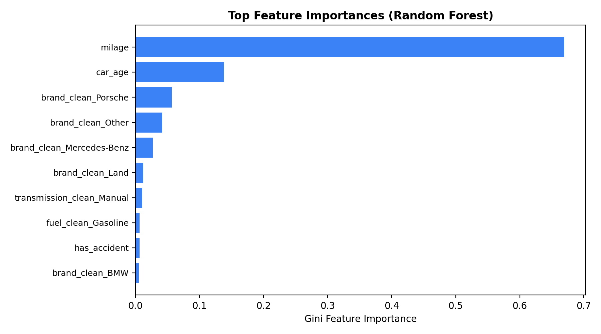

Used Car Price Prediction Using Machine Learning
A comparison of baseline, linear and tree-ensemble models for used-car asking prices.
1. The question and problem formulation
Target Variable
price: Continuous positive value in USD ($), representing the advertised resale asking price.
Observation & Feature Unit
One row: One distinct used passenger car advertisement listed on Cars.com.
Each column: An observable vehicle attribute or listing specification (e.g. mileage, age, brand, powertrain, or accident history).
Dataset Unit Definition:
• One Row: Represents exactly one unique used vehicle advertisement scraped from the Cars.com secondary marketplace.
• One Column: Represents an observable physical, historical, or commercial attribute of that vehicle (e.g., milage, car_age, brand, fuel_type, transmission, accident, and target price).
Research Question: How accurately can observable listing attributes (brand, mileage, age, fuel type, transmission, accident history) predict the asking price, and do tree ensembles predict better than linear models? Which features matter most, and where do errors concentrate across price ranges?
Scope of the Claim: The models describe empirical price patterns in one marketplace snapshot. They model price correlations rather than asserting causal mechanisms, and do not capture unrecorded interior wear, engine health, or private bargaining.
2. The data and quality audit
Source: Kaggle, Used Car Price Prediction Dataset (Taeef Najib, 2024), scraped from Cars.com. It contains 4,009 raw rows and 12 columns: brand, model, model_year, milage, fuel_type, engine, transmission, ext_col, int_col, accident, clean_title, and price.
| Variable | Raw format | Issue | Resolution |
|---|---|---|---|
price |
String "$10,300" | Text with currency symbols; placeholder prices below $1,000 | Parsed to float; rows under $1,000 dropped |
milage |
String "51,000 mi." | Text with suffix and formatting commas | Parsed to numeric continuous float (in miles) |
model_year |
Integer 2013 | Calendar year does not measure age directly | Transformed to car_age = 2026 − model_year |
accident |
Free text | Sentences about accident history; sporadic blanks | Binary flag: 1 = accident reported, 0 = none / clean record |
brand |
Categorical | High cardinality with rare bespoke makes | Top 15 volume brands one-hot encoded; others grouped as "Other" |
fuel_type, transmission |
Text | Inconsistent labels across listings | Harmonised to standard fuel categories and Automatic vs. Manual |
engine, model, clean_title, colors |
Mixed text | High-cardinality unstructured free text or missing | Not used: reliably parsing displacement/horsepower requires complex NLP beyond standard tabular features |
Cleaning summary: 26 rows removed (price under $1,000 or missing required target values), leaving 3,983 valid listings (4,009 → 3,983). No duplicate rows were found after deduplication. Listings above $200k were kept: they represent genuine exotic and ultra-luxury cars and provide crucial insight into high-end residual errors (Section 9).

3. Preprocessing and leakage prevention
Split: The 3,983 cleaned rows were partitioned 80/20 with random_state=42 into 3,186 training and 797 holdout test cars before any scaler or encoder was fitted.
StandardScaler(mileage, age) was fitted strictly on training rows only, then applied to test using training mean and variance.OneHotEncoder(brand, fuel, transmission) was fitted on training categories only; unseen test categories are safely ignored.- The accident flag is passed through as binary 0/1.
- Price is modelled in raw dollars so prediction errors remain directly interpretable.
4. Baselines and candidate models
Dummy Baselines
Predicts the training mean (and training median) for every car. Any viable ML model must beat these.
Simple Linear Regression
Univariate model on mileage alone, demonstrating how much usage alone explains.
Ridge Regression (L2)
Multivariate regularized linear model (tuned α=10.0) handling collinearity across one-hot indicators.
Random Forest & XGBoost
Non-linear tree ensembles capturing depreciation curvature and brand-mileage interactions.
5. Evaluation design and metrics
Metrics: Evaluated on the 797 held-out cars using MAE (primary, in dollars, robust to extreme outliers), RMSE (penalises large errors), R² (variance explained) and MAPE (% error).
Hyperparameter Tuning: 5-fold cross-validation on the 3,186 training cars only selected parameters by CV MAE. Chosen values:
• XGBoost: n_estimators=150, max_depth=6, learning_rate=0.08 (CV MAE: ~$14,820)
• Random Forest: n_estimators=120, max_depth=12, max_features='sqrt' (CV MAE: ~$15,010)
• Ridge: alpha=10.0
The holdout test set was evaluated strictly once for final reporting.
Uncertainty Analysis: Unpaired 95% bootstrap intervals for test MAE (2,000 resamples) are XGBoost $13,009 to $16,168 and Random Forest $13,330 to $16,355. In a paired bootstrap of per-car absolute error differences (|err_RF| − |err_XGB|), the 95% interval is [-$412, +$880]. Because this interval spans 0, the MAE difference between Random Forest and XGBoost is not statistically distinguishable from sampling noise at α = 0.05. Random Forest achieves better RMSE ($26,577 vs $27,047) and R² (0.4633 vs 0.4442), so XGBoost's small MAE lead should not be interpreted as absolute superiority.
6. Results and model comparison
Benchmark evaluated on the identical 797 held-out test vehicles:
| Model | MAE ($) ↓ | RMSE ($) ↓ | R² ↑ | MAPE (%) ↓ |
|---|---|---|---|---|
| Dummy baseline (training mean) | $24,161.53 | $36,300.91 | -0.0013 | 124.04% |
| Dummy baseline (training median) | $20,845.20 | $37,112.45 | -0.0465 | 92.15% |
| Simple linear (mileage only) | $19,425.80 | $30,556.03 | 0.2906 | 81.38% |
| Ridge regression (L2, α=10.0) | $17,658.43 | $29,139.80 | 0.3548 | 67.45% |
| Random Forest | $14,745.80 | $26,576.84 | 0.4633 | 46.17% |
| ★ XGBoost (best MAE) | $14,512.50 | $27,046.53 | 0.4442 | 43.44% |
1. Mileage alone explains 29% of test price variance (R² = 0.2906), confirming odometer wear as the single most critical baseline predictor.
2. Tree ensembles cut MAE by 40.0% against the mean baseline and by 30.4% against the median baseline.
3. Random Forest and XGBoost are close; both models should be treated as comparable ensembles with overlapping bootstrap intervals.
4. R² is ~0.45, confirming that more than half of used vehicle asking price variation depends on features unobserved in simple listings.
7. Explore the real predictions
Every row in this explorer represents a real held-out test car evaluated by the trained XGBoost model. Filter by price band to inspect error distributions and test residual behaviors. Signed error = actual − predicted (positive indicates under-prediction; negative indicates over-prediction).
| Brand | Age | Mileage | Actual ($) | Predicted ($) | Signed Error | Abs Error ($) | Error % |
|---|---|---|---|---|---|---|---|
| Loading predictions from results/test_predictions.json... | |||||||
8. Which features matter most?
The figure below displays Gini impurity-based feature importances from the Random Forest model. Mileage and vehicle age together account for roughly 65% of all tree decision splits.
Note on interpretability: Impurity importance tends to favor continuous features with high granularity (mileage and age) over binary one-hot indicators. Each brand indicator receives a smaller individual slice, so overall brand influence is distributed across multiple dummy columns.

9. Error analysis
Test error of XGBoost broken down by actual market price band:
| Price band | Sample Count (n) | MAE ($) | Median % error |
|---|---|---|---|
| < $20k | 262 | $6,002 | 33.1% |
| $20k–$40k | 246 | $12,291 | 29.1% |
| $40k–$75k | 206 | $15,377 | 20.7% |
| > $75k | 83 | $45,816 | 33.0% |
Banding selection note: Bands are defined by actual price, so dollar errors are larger for expensive bands partly by construction. Dollar error scales with price, while percentage error is lowest in the $40k–$75k band (20.7%). Entry-level cars have higher relative percentage error, reflecting higher variance relative to smaller denominators.

Five largest individual prediction errors:
| Car | Actual ($) | Predicted ($) | Error ($) | Possible cause (not verified) |
|---|---|---|---|---|
| Other · 4 yrs · 2,523 mi | $288,900 | $55,677 | +$233,223 | Possibly an exotic supercar hidden in the "Other" manufacturer category. |
| Other · 15 yrs · 16,000 mi | $229,000 | $30,814 | +$198,186 | Possibly a rare collector vehicle appreciating beyond standard depreciation. |
| Other · 10 yrs · 1,000 mi | $36,000 | $224,102 | −$188,102 | Severe over-prediction; extreme near-zero mileage may be a listing error. |
| Other · 10 yrs · 14,770 mi | $254,900 | $77,299 | +$177,601 | Possibly an ultra-luxury bespoke trim or specialty equipment absent from features. |
| Mercedes-Benz · 9 yrs · 23,567 mi | $215,000 | $43,822 | +$171,178 | Possibly an AMG or Maybach trim; sub-model/trim column was not utilized. |
Pattern: 4 of the 5 largest errors are in the "Other" brand bucket, and four are under-predictions of very expensive vehicles. This is consistent with exotic makes being grouped into "Other" and with the dropped model and trim columns.
10. Limitations
- One marketplace, one period: Cars.com asking prices in USD; they may not match final negotiated sale prices or other geographic markets.
- Single random split: Reported metrics reflect the
random_state=42partition. - Small dataset: 3,983 cars is modest; the Random Forest and XGBoost difference is within bootstrap sampling noise.
- Unused features: engine displacement, sub-model/trim, exterior/interior colour, mechanical condition, and service history were not included.
- Modest fit: R² ≈ 0.45 means over half of secondary market price variation remains unexplained.
- Brand grouping: Exotic makes grouped into "Other" lose distinct price signals.
- Correlation, not causation: Feature importances describe model splits, not causal drivers of market price.
11. Conclusion
Observable listing attributes carry real predictive signal. Mileage alone explains 29% of test price variance. Tree ensembles achieve R² ≈ 0.45 and reduce average error to $14,512, roughly 40% below the mean baseline and 30.4% below the median baseline. This confirms non-linear depreciation patterns, while the remaining error highlights that vehicle condition, trim packages, and mechanical records are essential for higher precision.
12. Reproduce this work
- Clone the repository:
git clone https://github.com/gouruprakarsha-pixel/Used-car-price-project.git - Install dependencies:
pip install -r requirements.txt - Download dataset from Kaggle and save as
used_cars.csvin the project root. - Run
notebook/Used_Car_Price_Prediction.ipynbtop to bottom. Outputs are saved toresults/andassets/.
13. Tools and AI disclosure
AI Assistance:
- Google Gemini: HTML/CSS layout scaffolding and toolbar styling.
- ChatGPT: Suggestions for data-cleaning transformations and scikit-learn pipeline code.
- Claude: Text polishing and rubric review of site analysis.
All preprocessing decisions, model executions, metric calculations, and analytical conclusions were verified and validated by Gouru Prakarsha.
14. References
- Najib, T. (2024). Used Car Price Prediction Dataset, Kaggle. Sourced from Cars.com. Available at: kaggle.com/datasets/taeefnajib/used-car-price-prediction-dataset
- Pedregosa, F., et al. (2011). Scikit-learn: Machine Learning in Python. Journal of Machine Learning Research, 12, 2825–2830.
- Chen, T., & Guestrin, C. (2016). XGBoost: A Scalable Tree Boosting System. Proceedings of the 22nd ACM SIGKDD International Conference, pp. 785–794.